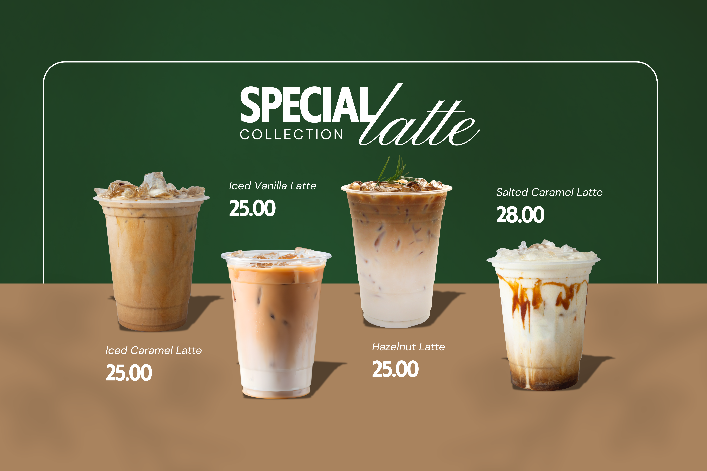
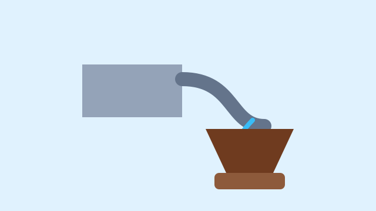

Galeri Secangkir Jeda
Media Usaha


Nada Penanda Kedai
Nada uji singkat memastikan elemen audio dan kontrol browser dapat diperiksa.


Nada uji singkat memastikan elemen audio dan kontrol browser dapat diperiksa.